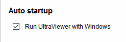

How to fix: Cannot start with Windows
Question:
I have installed Ultraviewer in a windows 7 64 bit and a windows 10 64 bit and activated from setting > run with windows, but it don't start. I could not connect to the remote computer.As it turned out, UltraViewer did not restart with Windows, even though this is checked.

Answer:
Thank you for using UltraViewer - remote pc software.
Please re-open UltraViewer by right click on UltraViewer icon and select Run as administrator.
Now tick on "Run UltraViewer with Windows" again and restart your computer to see the effect.
If you still have any issue, please send us an email to support@ultraviewer.net
Best regards.


Hi,Thanks for your great work, UltraViewer really works fantastic with Windows. Is there a possibility that it also works with Ubuntu?Regards,Oswin
Reply